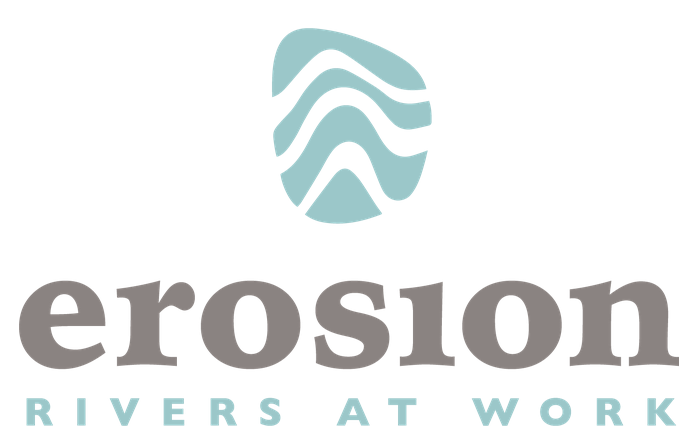

1. 序章¶
pgRouting は PostGIS にルート検索機能を追加します。
FOSS4G Hiroshima ワークショップの全内容については 目次 を参照してください。このワークショップでは、pgRouting の使い方を Basic (基本編) と Advanced (応用編) の2つのレベルに分けて扱います。
1.1. 基本編¶
このレベルでは、広島の OpenStreetMap 道路ネットワークデータを使った例を示しながら、ルート検索機能を紹介します。データの準備方法、ルート検索クエリの作成、結果の理解から、他の FOSS ツールと連携できる独自の 'plpgsql' 関数の作成までを扱います。
pgRouting をインストールします。
ルート検索トポロジーを作成します。
OpenStreetMap の道路ネットワークデータをインポートします。
pgRouting のアルゴリズムを使用します。
クエリを作成します。
独自の PostgreSQL ストアド関数を作成します。
前提条件
前提知識: PostgreSQL、PostGIS
必要な環境: OSGeoLive (17)
1.2. 応用編¶
pgRouting は拡張可能なオープンソースライブラリで、グラフアルゴリズムのためのさまざまなツールを提供します。その用途は車両のルート検索に限りません。応用編では、pgRouting を使って解けるいくつかのグラフ問題を扱います。
前提条件
前提知識: PostgreSQL、PostGIS、pgRouting の基本編
必要な環境: OSGeoLive (17)
1.3. 謝辞¶
協賛

FOSS4G Hiroshima ワークショップの開発者・発表者:
Vicky Vergara はメキシコ出身のフリーランス開発者です。pgRouting プロジェクトのコア開発者であり、GSoC のメンターも務めています。また、OSGeo のチャーターメンバーでもあります。
過去および現在の講師・開発者:
Daniel Kastl, Iosefa Persival, José Ríos, Ko Nagase, Stephen Woodbridge, Swapnil Joshi, Rajat Shinde, Ramón Ríos, Rohith Reddy, Vicky Vergara
過去および現在の支援者:
erosion Georepublic, Paragon Corporation
ライセンス
この作品は クリエイティブ・コモンズ 表示 - 継承 3.0 ライセンス の下に提供されています。